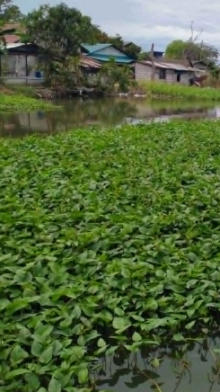
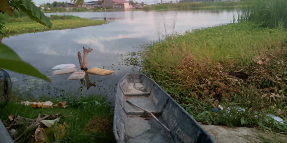

ROMEO VALDERAMA
Sampung taon na akong naglilingkod sa barangay, ngunit dalawang taon pa lamang bilang sitio leader. Noong una, hindi pa lubog sa baha ang Sitio Paligui, ngunit nitong mga nakaraang taon, umabot na sa balakang ang tubig sa ilang bahay. Sa tuwing may paparating na bagyo, hindi ko maiwasang mangamba. Bago pa man ako matulog, iniisip ko na ang paghahanda para sa bahay at sa barangay.

Naranasan ko nang mawalan ng cellphone at mabasa ang mga personal kong gamit sa gitna ng baha. Isang beses, habang nag-aalis kami ng mga halamang kangkong sa pampang ng ilog upang hindi maharang ang agos ng tubig, nadulas ang isa kong kasamahan at muntik nang malunod. Sa mga ganitong pagkakataon, mas lalo kong nauunawaan ang bigat ng aming tungkulin. Sa dulo ng sitio, may mga pamilyang piniling itaas ang kanilang sahig upang makahanap ng ginhawa tuwing bagyo, habang ang iba nama’y lumisan na lamang para sa kaligtasan ng kanilang mga anak dahil may mga bata pa ring lumalabas at naglalaro kahit mataas na ang tubig.
Mapalad ako’t may sarili akong maliit na bangka. Kapag masyadong mataas ang baha, ipinapahiram ko ito para sa patrol at pagtugon sa mga nangangailangan. Ginagawa ko ang lahat ng aking makakaya upang makatulong sa mga residente, lalo na sa panahon ng pagbangon matapos ang baha.
“ Naniniwala ako na kung may lumapit sa iyo para humingi ng tulong, kahit hindi mo sila direktang matulungan, ang tiwala nilang lumapit ay patunay na maaasahan ka. Kaya’t itinuturo ko sila sa barangay upang mas matulungan pa. ”

Sa paniniwalang iyon, umaasa akong matutuhan ng mga tao ang pagiging mas mapagmalasakit. Sa pamamagitan ng pagbabahagi ng aming karanasan bilang mga responder, mas makikita nila ang halaga ng pagkakaisa. Sapagkat sa bawat unos na dumaraan, ang tunay na lakas ng komunidad ay nasusukat sa kung paano tayo kumikilos bilang iisang pamilya.